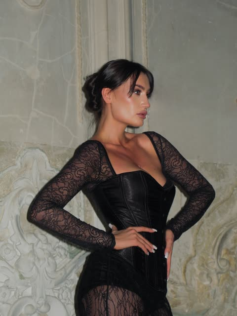
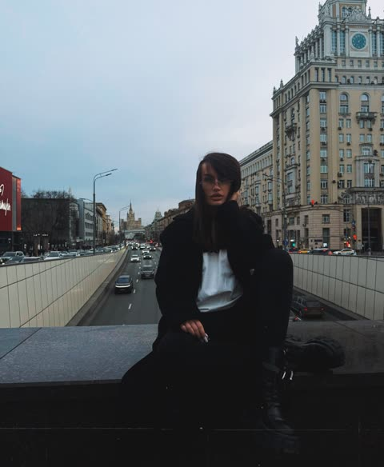
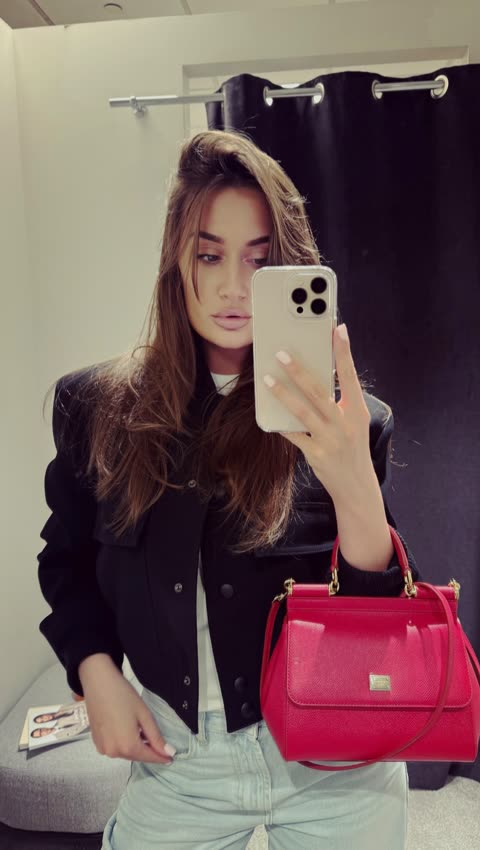
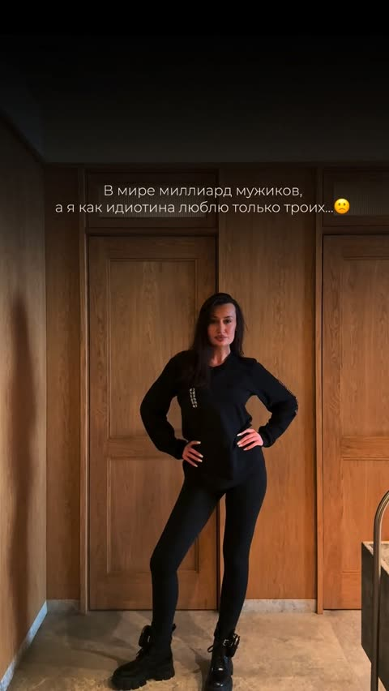
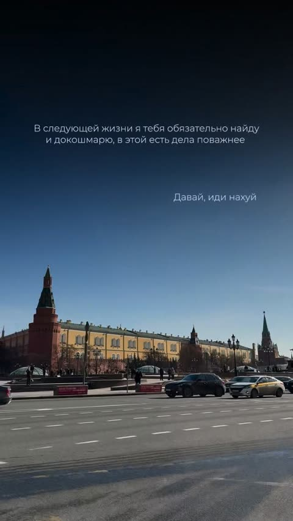
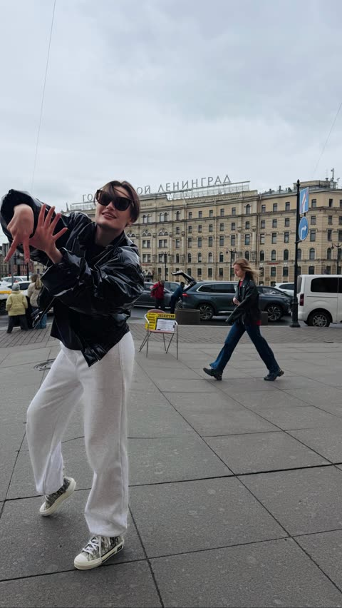
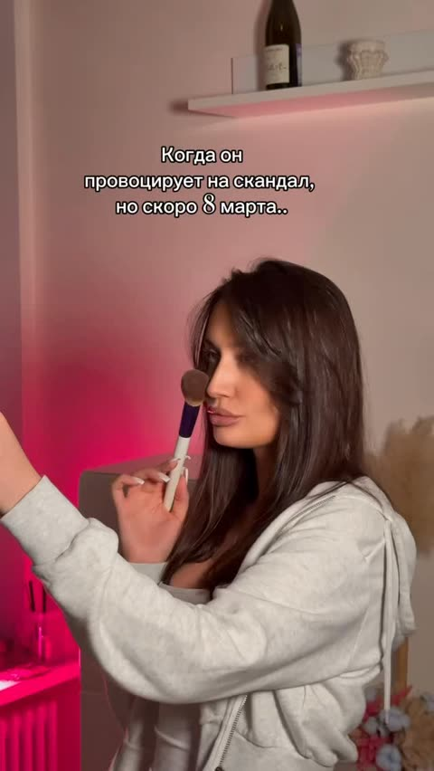

Что входит в работу, как мы начинаем, как проходит каждый месяц, чем он заканчивается и на каких условиях мы работаем.
Профиль на 23 сентября 2026. От этих цифр считаем результат работы.

карусельлайки скрыты · 19 комм.
карусельлайки скрыты · 5 комм. карусель♥ 204 · 11 комм.
только Reels▶ 19 263 · ♥ 250
рилс▶ 4 309 · ♥ 148
только Reels▶ 4 816 · ♥ 145
рилс▶ 49 211 · ♥ 2 516 рилс▶ 96 388 · ♥ 3 949
рилс▶ 10 218 · ♥ 249| Рилсов | 6: 4 в сетке, 2 только во вкладке Reels |
| Период рилсов | 6 марта — 4 апреля |
| Самый просматриваемый рилс | 96 388 |
| После 4 апреля | только карусели |
| Последняя публикация | 5 сентября |
| Лайки скрыты | на 2 каруселях из 4 |
| Альбомов актуальных | 6 |
| Ссылка в шапке | нет |
В день старта дополнительно фиксируем статистику из Вашего кабинета за последние 90 дней: охваты, просмотры, прирост, аудиторию. Это точка отсчёта, с которой сравниваем каждый месяц.
Ролик — конечная точка, а не вся работа. За каждым выпущенным роликом стоит то, что не видно в ленте: разбор блога и цифр, распаковка, стратегия, поиск формата, съёмка, монтаж, обложка, подпись, выбор момента публикации, разбор результата.
Стратегия, распаковка и её разбор, позиционирование, форматы, темы, планирование съёмок. Происходит до того, как включена камера.
Ответы на вопросы, решения по текущим ситуациям, разбор Ваших идей, реакция на то, что происходит в блоге. Каждый день в рабочем чате.
Съёмка, монтаж, оформление, выпуск, разбор результата и корректировка следующего шага.
Каждый этап — слой, без которого следующий не работает. Идём по порядку.
Восемь сторон, которые закрывает контент. Под каждую подбираются темы из распаковки и событие, внутри которого она показывается.
Первый месяц — по шагам.
Как принимаются решения и как фиксируются договорённости.
Сначала распаковка, потом темы и форматы, потом съёмки. Без распаковки нет позиционирования, без позиционирования нет форматов, без форматов нет системного контента. Пропуск этапа не ускоряет результат.
Итог каждого созвона я пишу в рабочий чат. Темы, форматы, график съёмок и план публикаций согласуются там же. Ваше «да» в чате — это согласование. Созвоны записываются, записи хранятся до конца работы.
Дату, время и место съёмки выбираем вместе, исходя из Вашего графика и тем месяца. Договорённость фиксируем в чате.
После согласования тема уходит в съёмку. Если после съёмки тема или ролик Вам разонравились — ролик не выходит, это Ваше право. Но работа по нему считается выполненной, и тема заменяется в следующем цикле.
Из ответов собираются тексты и темы. Поэтому отвечать нужно честно и про себя. Если ответ получился «не про Вас» — скажите сразу, а не после съёмки.
Приносите идею — разбираем, что она раскрывает и куда встаёт в очередь. Сильная идея двигает очередь, по слабой объясню почему. Внеплановые ролики «нужно сегодня» в состав работ не входят: они ломают порядок.
Как Вы выглядите в кадре и что Вы готовы показывать — решаете только Вы. Стратегию, форматы, порядок и момент выпуска предлагаю я, потому что за результат отвечаю тоже я. Любое моё решение можно обсудить: спрашивайте, почему так, я объясняю.
Удаление или архивирование вышедших роликов сначала обсуждаем: это ломает статистику и серию. Удалённые ролики остаются в объёме выполненной работы.
Ответы на распаковку в первые две недели. Участие в съёмочных днях по графику, перенос — не позднее чем за сутки. Обратная связь по материалу в течение двух дней, чтобы работа не стояла. Доступ к статистике профиля.
Что Вы получаете в конце каждой недели, месяца и первого цикла работы.
Оплата помесячно, 100% предоплата до старта каждого месяца. Минимальный срок работы — 3 месяца: первый месяц уходит на фундамент, результат в цифрах виден на дистанции.
Конкретную цифру подписчиков к конкретной дате. Рост зависит от алгоритма, регулярности и того, как часто Вы в кадре. Я отвечаю за объём и качество работы и показываю цифры каждую неделю.
Объём работ — это этот план. Если объём месяца не выполнен по моей вине, возвращаю 50% стоимости месяца.
Первый месяц — фундамент: распаковка, упаковка, форматы, первые ролики. Результат месяца — не цифра подписчиков, а система и первые ролики, после которых люди остаются. Второй месяц — усиление того, что сработало. Третий — главный формат и серии. Цифры смотрим каждую неделю.
7–10 роликов с одного съёмочного дня — это ориентир при готовых темах, а не норма месяца. В первый месяц роликов меньше: идёт фундамент. Со второй-третьей недели, если все этапы пройдены вовремя и в нужном объёме, выходим на 1–2 ролика в день.
Не нравитесь себе в кадре — ролик не выходит, вопросов нет. Что выходит раньше, а что позже, решаю я, потому что за результат отвечаю тоже я.